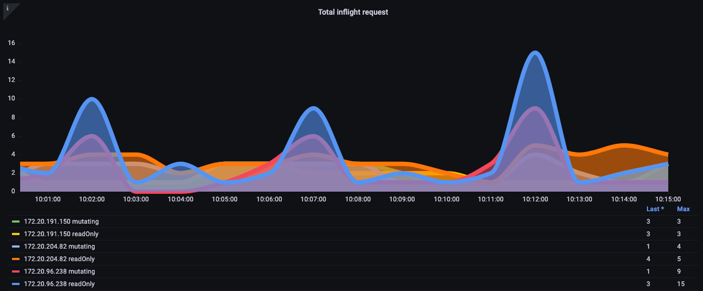
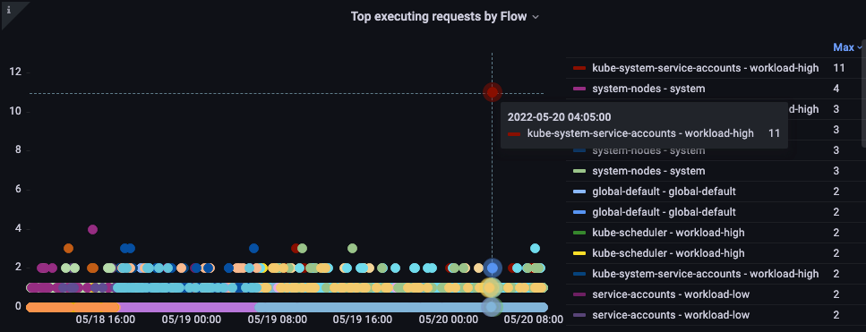
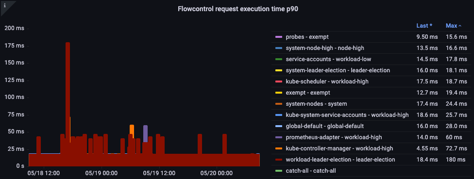
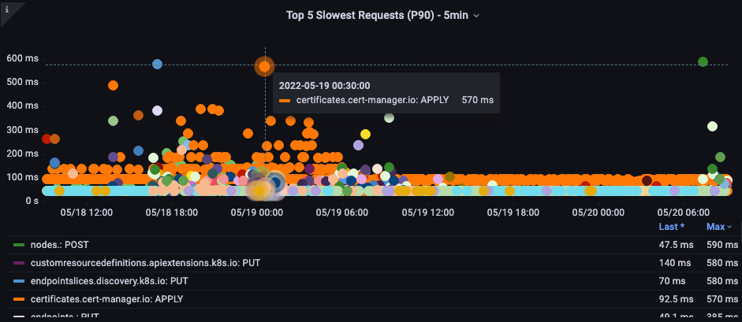
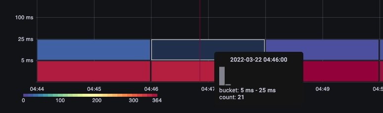
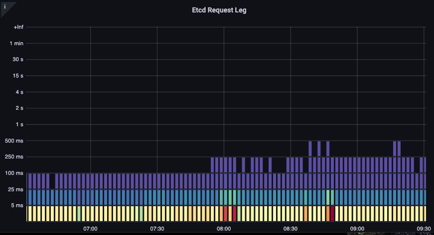

Amazon EKS API サーバーのモニタリング¶
このオブザーバビリティのベストプラクティスガイドのセクションでは、API サーバーのモニタリングに関連する以下のトピックについて詳しく説明します。
- Amazon EKS API サーバーのモニタリングの紹介
- API サーバーのトラブルシューティングダッシュボードの設定
- API トラブルシューティングダッシュボードを使用した API サーバーの問題の理解
- API サーバーへの無制限なリスト呼び出しの理解
- API サーバーへの不適切な動作の停止
- API の優先順位と公平性
- 最も遅い API 呼び出しと API サーバーのレイテンシの問題の特定
はじめに¶
Amazon EKS で管理されるコントロールプレーンのモニタリングは、EKS クラスターの正常性に関する問題を事前に特定するための非常に重要な Day 2 運用アクティビティです。 Amazon EKS コントロールプレーンモニタリングにより、収集されたメトリクスに基づいて予防措置を講じることができます。 これらのメトリクスは、API サーバーのトラブルシューティングと、内部の問題の特定に役立ちます。
このセクションでは、Amazon EKS API サーバーモニタリングのデモンストレーションに Amazon Managed Service for Prometheus(AMP) とメトリクスの可視化に Amazon Managed Grafana(AMG) を使用します。 Prometheus は、強力なクエリ機能を備え、さまざまなワークロードで広くサポートされている一般的なオープンソースのモニタリングツールです。 Amazon Managed Service for Prometheus は、Amazon EKS、Amazon Elastic Container Service(Amazon ECS)、Amazon Elastic Compute Cloud(Amazon EC2)などの環境を安全かつ信頼性高くモニタリングするのに役立つ、完全マネージドの Prometheus 互換サービスです。 Amazon Managed Grafana は、オープンソースの Grafana の完全マネージドかつセキュアなデータ可視化サービスで、アプリケーションの運用メトリクス、ログ、トレースを複数のデータソースから即座にクエリ、相関分析、可視化できます。
まず、Amazon Managed Service for Prometheus と Amazon Managed Grafana を使用してスターターダッシュボードを設定し、Prometheus で Amazon Elastic Kubernetes Service(Amazon EKS) API サーバーのトラブルシューティングを支援します。 次のセクションでは、EKS API サーバーのトラブルシューティング時の問題の理解、API の優先順位と公平性、悪い動作の停止について詳しく説明します。 最後に、最も遅い API 呼び出しと API サーバーレイテンシの問題を特定して、Amazon EKS クラスターの状態を正常に保つためのアクションを実行できるようになります。
API サーバーのトラブルシューティング用ダッシュボードの設定¶
AMP を使用して Amazon Elastic Kubernetes Service(Amazon EKS) API サーバーのトラブルシューティングを支援するためのスターターダッシュボードを設定します。 これを使用して、本番 EKS クラスターのトラブルシューティング中にメトリクスを理解できるように支援します。 収集されたメトリクスにフォーカスを当て、Amazon EKS クラスターのトラブルシューティング中にその重要性を理解します。
まず、Amazon EKS クラスターからメトリクスを収集し、Amazon Managed Service for Prometheus に送信するための ADOT コレクターを設定します。 この設定では、EKS ADOT アドオンを使用します。これにより、EKS クラスターがアップおよび実行された後いつでも ADOT をアドオンとして有効にできます。 ADOT アドオンには、最新のセキュリティパッチとバグ修正が含まれており、Amazon EKS で動作することが AWS によって検証されています。 この設定では、EKS クラスターに ADOT アドオンをインストールする方法と、それを使用してクラスターからメトリクスを収集する方法を示します。
次に、最初のステップで設定した AMP をデータソースとして使用して、Amazon Managed Grafana ワークスペースを設定し、メトリクスを可視化します。 最後に、API トラブルシューターダッシュボード をダウンロードし、Amazon Managed Grafana に移動して、API トラブルシューターダッシュボードの json をアップロードして、さらなるトラブルシューティングのためにメトリクスを可視化します。
API トラブルシューティングダッシュボードを使用して問題を理解する¶
クラスタにインストールしたい興味深いオープンソースプロジェクトを見つけたとします。その Operator は DaemonSet をクラスタにデプロイしますが、そこには不適切なリクエスト、不要なほどの高頻度の LIST 呼び出し、あるいは 1,000 ノードのすべてのノード上の各 DaemonSet が毎分クラスタ上の 50,000 ポッドのステータスを要求しているなどの問題が含まれている可能性があります。
こうしたことが本当に頻繁に起こるのでしょうか。はい、そうなのです! なぜそうなるのか、ちょっとした迂回路を見てみましょう。
LIST と WATCH の違いを理解する¶
クラスタ内のオブジェクトの状態を理解する必要があるアプリケーションがあります。 たとえば、マシンラーニング(ML)アプリケーションは、完了ステータスでない Pod の数を理解することによってジョブのステータスを知りたいと考えています。 Kubernetes では、WATCH と呼ばれるものでこれを上手く行う方法があります。また、クラスタ上のすべてのオブジェクトをリストアップして、それらの Pod の最新のステータスを見つけるというあまり望ましくない方法もあります。
適切に動作する WATCH¶
Kubernetes でプッシュモデルによる更新を受信するために WATCH や長期間存続する単一の接続を使用することが、最もスケーラブルな更新方法です。 多少単純化していえば、システムの完全な状態を要求し、そのオブジェクトの変更が受信されたときにのみキャッシュ内のオブジェクトを更新し、更新を見逃していないことを確認するために定期的に再同期を実行します。
下の画像では、apiserver_longrunning_gauge を使用して、両方の API サーバー全体でこれらの長期間存続する接続の数を把握しています。

図: apiserver_longrunning_gauge メトリクス
この効率的なシステムであっても、まだ多すぎるほどの良いものがある場合があります。 たとえば、非常に小さなノードを多数使用し、API サーバーと通信する必要がある 2 つ以上のデーモンセットを使用している場合、システムの WATCH 呼び出しの数を不必要に劇的に増加させることが非常に簡単です。 たとえば、8 つの xlarge ノードと 1 つの 8xlarge ノードの違いを見てみましょう。 ここでは、システムの WATCH 呼び出しが 8 倍に増加しているのがわかります。

図: 8 つの xlarge ノードの WATCH 呼び出し数。
これらは効率的な呼び出しですが、前述の不適切な呼び出しであったとしたらどうでしょうか? 1,000 ノードのそれぞれで上記のデーモンセットの 1 つが、クラスター内の合計 50,000 ポッドのそれぞれに対する更新を要求していると想像してみてください。 次のセクションでは、この無制限のリスト呼び出しのアイデアを探究します。
続ける前に、上記の例のような統合は非常に注意深く行う必要があり、考慮しなければならない他の多くの要因があることを簡単に警告しておきます。 システムで利用できる CPU の制限された数をめぐって競合するスレッドの遅延から、ポッドのチャーンレート、ノードが安全に処理できる最大ボリュームアタッチメント数まで、あらゆるものがそうです。 ただし、焦点は問題の発生を防ぐ実行可能な手順につながるメトリクスに置かれます。そして、設計に対する新しい洞察を与えてくれる可能性があります。
WATCH メトリクスはシンプルなものですが、WATCH の数を追跡および削減するために使用できます(それが問題である場合)。 WATCH の数を削減するために検討できるいくつかのオプションを以下に示します。
- Helm が履歴を追跡するために作成する ConfigMap の数を制限する
- イミュータブルな ConfigMap と Secret を使用する(WATCH を使用しない)
- 適切なノードサイズ設定と統合
API サーバーへの無制限なリストコールの理解¶
これまで説明してきた LIST コールについてです。リストコールは、オブジェクトの状態を理解するたびに、Kubernetes オブジェクトの全履歴を取得するものです。このとき、キャッシュには何も保存されません。
これがどの程度の影響を与えるかは、エージェントの数、データ要求の頻度、要求データ量によって異なります。クラスタ全体を要求しているのか、単一の名前空間だけなのか。それが毎分、すべてのノードで発生するのか。例として、ノードから送信されるすべてのログに Kubernetes のメタデータを追加するロギングエージェントを使用しましょう。これは、大規模なクラスタでは膨大なデータ量になる可能性があります。エージェントがリストコールを介してそのデータを取得する方法は多数ありますので、いくつかを見ていきましょう。
以下のリクエストは、特定の名前空間から Pod を要求しています。
/api/v1/namespaces/my-namespace/pods
次に、クラスタ上のすべての 50,000 個の Pod を要求しますが、500 個ずつのチャンクで要求します。
/api/v1/pods?limit=500
次のコールが最も破壊的です。クラスタ全体のすべての 50,000 個の Pod を一度に取得します。
/api/v1/pods
これは現場でかなり頻繁に発生し、ログで確認できます。
API サーバーへの悪い動作の停止¶
このような悪い動作からクラスターをどのように保護できるでしょうか? Kubernetes 1.20 より前は、API サーバーは 1 秒間に処理される inflight リクエストの数を制限することによって自身を保護していました。etcd は一度に実行できるリクエスト数には限界があるため、リクエスト数を 1 秒あたりの適切な値に制限し、etcd の読み書きレイテンシを許容範囲内に保つ必要があります。残念ながら、この記事執筆時点では、これを動的に行う方法はありません。
下のチャートでは、デフォルトの最大 400 の inflight リクエスト数と、デフォルトの最大 200 の同時書き込みリクエスト数を持つ、読み取りリクエストの内訳を確認できます。デフォルトの EKS クラスターでは、合計 800 の読み取りと 400 の書き込みを処理できる 2 つの API サーバーがあります。ただし、アップグレード直後など、サーバーに非対称な負荷がかかる時期があることに注意が必要です。

図: 読み取りリクエストの内訳を示す Grafana チャート。
上記の方式は完璧なものではないことが判明しました。例えば、今インストールしたこの誤動作する新しい operator が、ノードのキープアライブメッセージなどの重要なリクエストを遅延させる可能性がある API サーバーの inflight 書き込みリクエストをすべて占有するのをどうやって阻止できるでしょうか。
API の優先順位と公平性¶
1 秒間に開いている読み取り/書き込みリクエストの数を心配する代わりに、容量を 1 つの全体的な数値として扱い、クラスター上の各アプリケーションがその最大数の公平な割合またはシェアを得ることができたらどうでしょうか。
それを効果的に行うには、API サーバーにリクエストを送信したものを識別し、そのリクエストに名前タグのようなものを付ける必要があります。この新しい名前タグを使用することで、これらのリクエストがすべて、「Chatty」と呼ばれる新しいエージェントからのものであることがわかります。この概念により、これらのリクエストが同じ DaemonSet からのものであることを特定するフローと呼ばれるグループに、Chatty のすべてのリクエストをまとめることができるようになりました。これにより、この悪いエージェントを制限し、クラスター全体を消費しないようにすることができます。
ただし、すべてのリクエストが同じではありません。クラスターを操作可能な状態に保つために必要なコントロールプレーントラフィックは、新しいオペレーターよりも優先度が高くする必要があります。ここで優先度レベルの概念が登場します。クリティカル、高、低の優先度トラフィック用にデフォルトでいくつかの「バケット」またはキューがあったとしたらどうでしょうか。クリティカルなトラフィックキューでチャティエージェントフローが公平なシェアのトラフィックを得ることは望ましくありません。ただし、そのトラフィックを低優先度キューに入れることができます。そうすることで、そのフローはおそらく他のチャティエージェントと競合することになります。次に、各優先度レベルが、API サーバーが処理できる全体の最大数の適切なシェアまたは割合を持つことを確認する必要があります。これにより、リクエストの遅延が大きくなりすぎないようにできます。
優先順位と公平性の実践¶
これは比較的新しい機能なので、多くの既存のダッシュボードは、最大同時読み取り数と最大同時書き込み数の古いモデルを使用しています。なぜこれが問題になるのでしょうか。
kube-system 名前空間のすべてに高い優先順位の名前タグを付けていたとしても、重要な名前空間に不適切なエージェントをインストールしたり、単純にその名前空間に過剰にアプリケーションをデプロイした場合はどうでしょう。回避しようとしたのと同じ問題が発生する可能性があります。したがって、このような状況を注意深く監視することが大切です。
この種の問題を追跡するのに最も興味深いメトリクスをいくつか抜粋しました。
- 優先度グループのシェアの何パーセントが使用されているか。
- リクエストがキューで待機した最長時間はどれくらいか。
- どのフローが最も多くのシェアを使用しているか。
- システムに予期しない遅延があるか。
使用率のパーセンテージ¶
ここでは、クラスター上のさまざまなデフォルトの優先度グループと、最大値の何パーセントが使用されているかが表示されます。

図: クラスター上の優先度グループ。
キュー内のリクエスト時間¶
優先キューで処理される前にリクエストが座っていた秒数です。

図: リクエストが優先キュー内にあった時間。
フロー別の実行回数上位リクエスト¶
どのフローが最も大きなシェアを占めているでしょうか。

図: フロー別の実行回数上位リクエスト
リクエスト実行時間¶
処理に予期しない遅延はありますか?

図: フロー制御リクエスト実行時間。
最も遅い API 呼び出しと API サーバーのレイテンシー問題の特定¶
API のレイテンシーを引き起こす要因の性質を理解したので、大局的な視点で問題を見直すことができます。ダッシュボードの設計は単に、調査が必要な問題があるかどうかのスナップショットを取得しようとしていることを忘れてはいけません。詳細な分析には、Ad-hoc クエリで PromQL を使用するか、ログクエリを使用するのが望ましいでしょう。
高レベルのメトリクスで確認したいアイデアは何でしょうか。
- どの API 呼び出しに最も時間がかかっていますか?
- その呼び出しは何をしているのでしょうか? (オブジェクトの一覧表示、削除など)
- その操作の対象となっているオブジェクトは何でしょうか? (Pod、Secret、ConfigMap など)
- API サーバー自体にレイテンシーの問題がありますか?
- 優先キューの 1 つで遅延が発生し、リクエストのバックアップが発生していますか?
- etcd サーバーがレイテンシーを経験しているために、API サーバーが遅いように見えるだけなのでしょうか?
最も遅い API 呼び出し¶
以下のチャートでは、その期間で完了するのに最も時間がかかった API 呼び出しを探しています。この場合、05:40 の時間帯で最も待ち時間の長い呼び出しである LIST 関数をカスタムリソース定義 (CRD) が呼び出していることがわかります。このデータを使って、CloudWatch Insights でその時間帯の監査ログから LIST リクエストを引き出し、どのアプリケーションかを確認できます。

図: 上位 5 つの最も遅い API 呼び出し
API リクエストの所要時間¶
この API レイテンシーチャートは、1 分のタイムアウト値に近づいているリクエストがあるかどうかを理解するのに役立ちます。以下の時間経過によるヒストグラム形式が好きです。これにより、線グラフでは隠れてしまうデータの外れ値が確認できます。

図: API リクエスト期間のヒートマップ。
バケットをホバーするだけで、約 25 ミリ秒かかった呼び出しの正確な数を確認できます。 [Image: Image.jpg]図: 25 ミリ秒以上かかった呼び出し。
この概念は、リクエストをキャッシュする他のシステムで動作しているときに重要です。キャッシュリクエストは高速です。低速なリクエストのレイテンシとキャッシュリクエストのレイテンシをマージしたくありません。ここでは、キャッシュされたリクエストとキャッシュされていないリクエストの2つの明確なレイテンシーバンドが確認できます。

図: レイテンシー、キャッシュされたリクエスト。
ETCD リクエスト期間¶
ETCD のレイテンシは、Kubernetes のパフォーマンスにおいて最も重要な要因の 1 つです。Amazon EKS では、request_duration_seconds_bucket メトリクスを見ることで、API サーバーの視点からこのパフォーマンスを確認できます。

図: request_duration_seconds_bucket メトリクス
これまで学んできたことを、特定のイベントが相関しているかどうかを確認することで組み合わせることができます。下のチャートでは、API サーバーのレイテンシを確認できますが、このレイテンシの多くが etcd サーバーから発生していることもわかります。ひと目で正しい問題領域にすばやく移動できることが、ダッシュボードを強力にしています。

図: ETCD リクエスト
まとめ¶
このオブザーバビリティのベストプラクティスガイドのセクションでは、Amazon Elastic Kubernetes Service(Amazon EKS) API サーバーのトラブルシューティングに役立つように、Amazon Managed Service for Prometheus と Amazon Managed Grafana を使用したスターターダッシュボード を使用しました。さらに、EKS API サーバーのトラブルシューティング中に発生する問題の理解、API の優先順位と公平性、悪い動作の停止について深く掘り下げました。最後に、最も遅い API 呼び出しと、Amazon EKS クラスターの状態を健全に保つためのアクションを取るのに役立つ API サーバーレイテンシの問題を特定することについて深く掘り下げました。さらなる深掘りのために、AWS ネイティブのオブザーバビリティカテゴリの AWS One Observability ワークショップ のアプリケーションモニタリングモジュールを実践することを強くおすすめします。